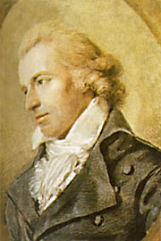

Örömóda (részlet)

ángolj fel a lelkünkben szép
Égi szikra szent öröm,
Térj be hozzánk drága vendég,
Tündökölj ránk fényözön.
Egyesítsed szellemeddel,
Mit zord erkölcs szétszakít,
Testvér lészen minden ember,
Merre lengnek szárnyaid.